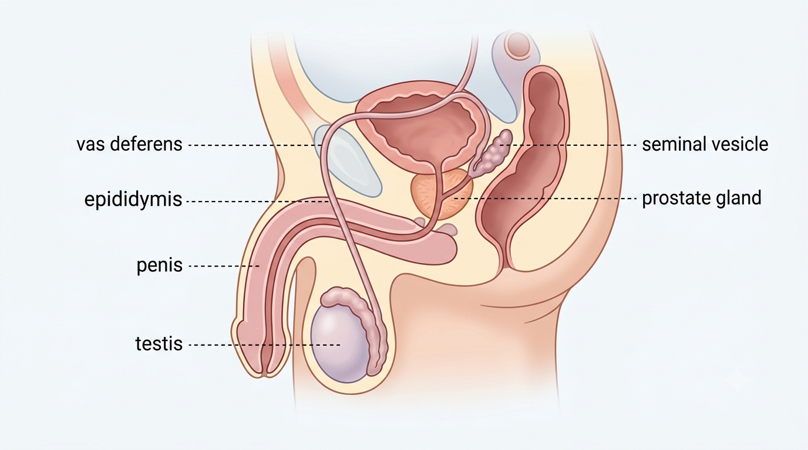
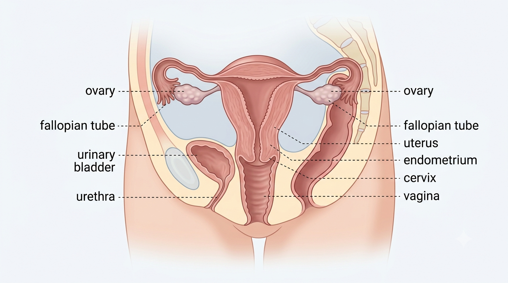
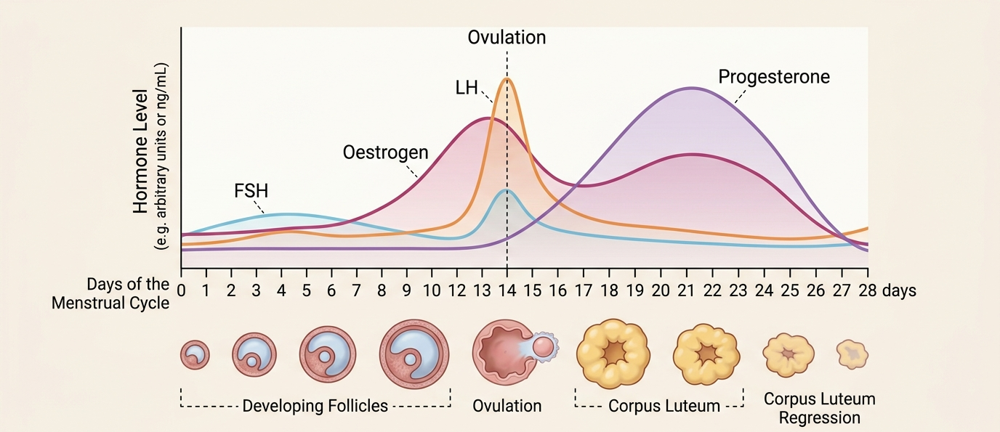
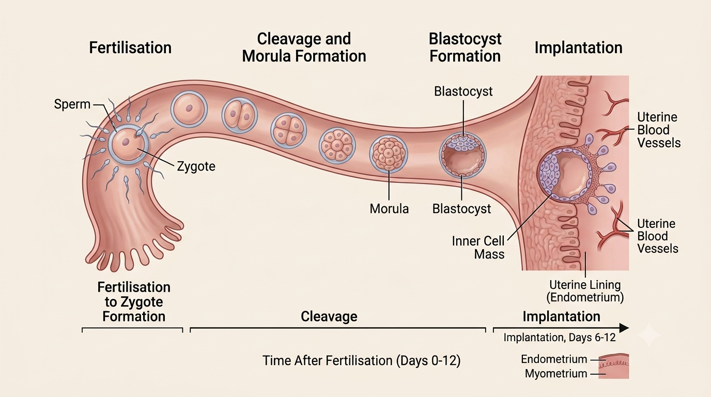

From the structures that produce sex cells to the hormones that control the menstrual cycle — explore the male and female reproductive systems and how fertilisation leads to pregnancy.
The testes (singular: testis) are the primary male reproductive organs — they produce sperm cells (male gametes) and the hormone testosterone. Sperm mature and are stored in the epididymis before passing through the vas deferens during ejaculation.

The ovaries are the primary female reproductive organs — they produce egg cells (ova) and the hormones oestrogen and progesterone.

The menstrual cycle is a roughly monthly cycle controlled by hormones, preparing the body for a possible pregnancy:

Fertilisation — the fusion of a sperm cell and an egg cell — normally takes place in the oviduct (fallopian tube), forming a diploid zygote. As the zygote travels down the oviduct toward the uterus, it develops through a defined sequence of stages:
The morula is a solid ball of cells produced by repeated mitotic division of the zygote, with no increase in overall size. It continues dividing to form the blastocyst (also called a blastula) — now a hollow ball of cells with a fluid-filled cavity. The blastocyst is the stage that embeds itself into the thickened uterine lining, a process called implantation.

The placenta then develops, forming the vital link between mother and developing fetus throughout gestation. It allows the exchange of oxygen, nutrients, and waste products between the mother's blood and the fetus's blood (without the two directly mixing), and also produces hormones that maintain the pregnancy.
Toggle between the male and female reproductive systems, then click a structure (or the list) to learn its function.
| Day of cycle | 1 | 7 | 14 | 21 |
|---|---|---|---|---|
| Oestrogen (relative units) | 20 | 60 | 180 | 90 |
| LH (relative units) | 10 | 12 | 150 | 15 |
| Progesterone (relative units) | 5 | 5 | 10 | 80 |